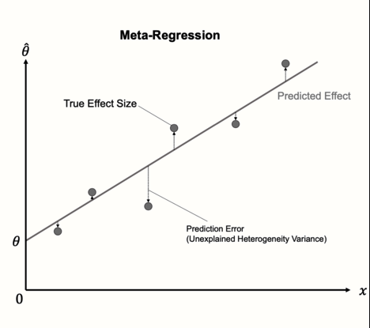
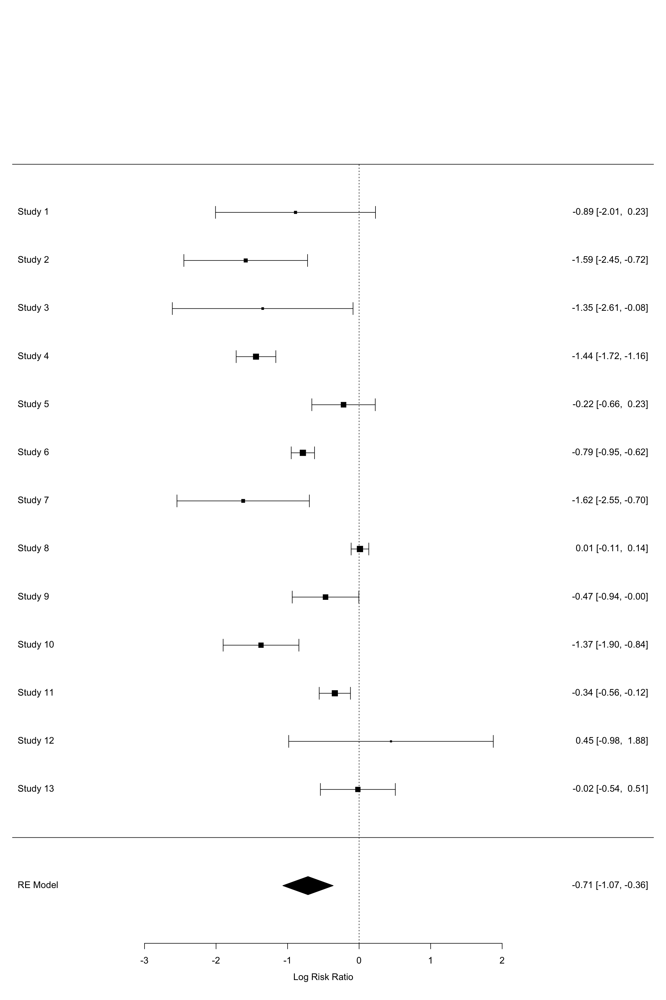
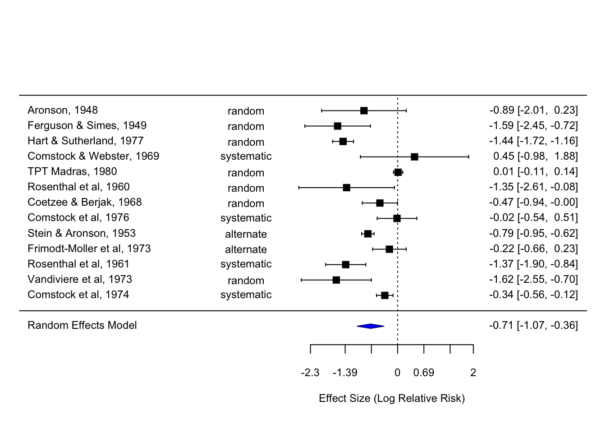
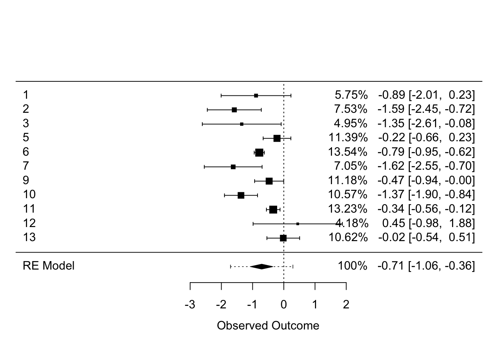
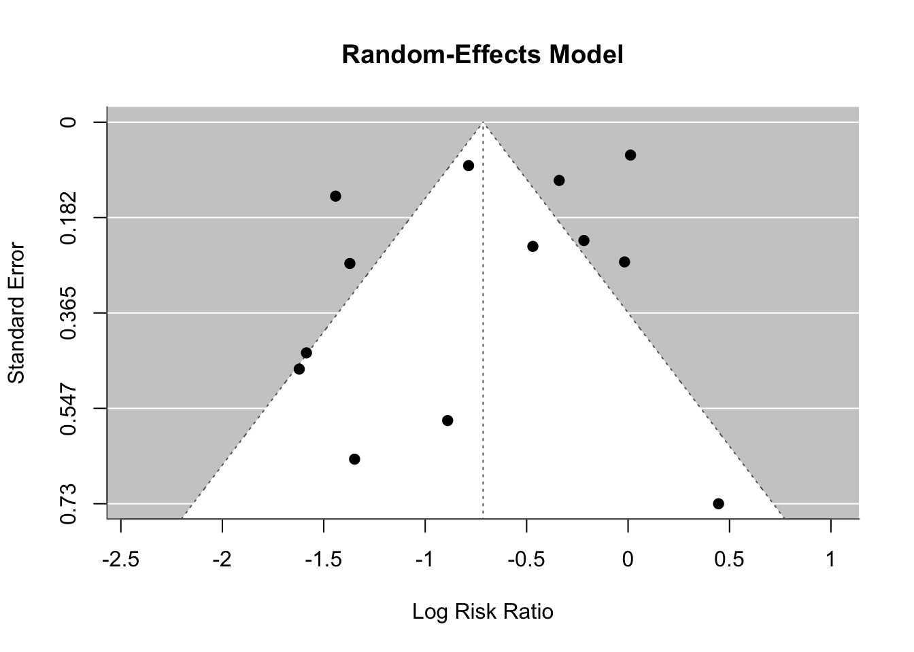
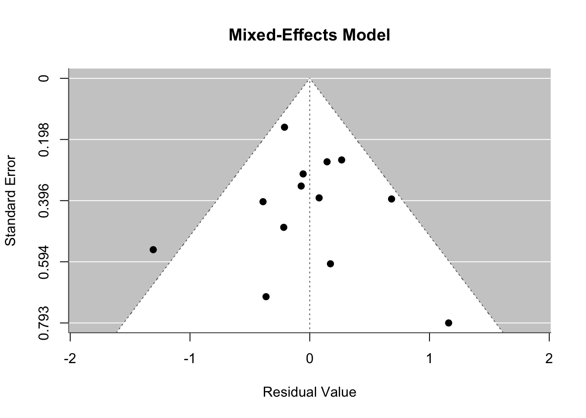

#install.packages("dmetar")
library(dmetar)
library(metafor)
library(knitr)
library(kableExtra)
library(tidyverse)
data("MVRegressionData", package = "dmetar")
data("dat.bcg", package = "metafor")Understanding Meta-Analysis: A Comprehensive Overview
Meta-analysis is a statistical approach used to synthesize results from multiple studies to derive conclusions with greater statistical power and generalizability. By combining data from several independent studies, meta-analysis helps to resolve uncertainty when individual studies disagree and provides a more precise estimate of the effect size.
What is Meta-Analysis?
Meta-analysis involves systematically reviewing, extracting, and statistically combining data from a collection of studies that address a common research question. This technique enables researchers to:
Summarize Evidence: Meta-analysis aggregates findings, offering a comprehensive overview of what the research community knows about a particular topic.
Increase Power: By pooling data from multiple studies, meta-analysis enhances the statistical power to detect effects that individual studies might miss.
Address Variability: It helps to understand the variation in study results, identifying factors that contribute to differences across studies.
What Does Meta-Analysis Do?
Meta-analysis goes beyond simple summary by:
Estimating Overall Effect: It calculates a weighted average effect size, giving more weight to studies with larger samples or more precise estimates.
Exploring Heterogeneity: It assesses the degree of variability among study results to understand if differences are due to chance or other underlying factors.
Identifying Subgroup Effects: By stratifying data, meta-analysis can explore how effects vary across different subgroups, such as age, gender, or intervention type.
Common Problems in Meta-Analysis
While meta-analysis is a valuable tool, it has a few challenges that can make a traditional and straightforward approach difficult. Two of the most significant problems are heterogeneity in methods and dependence among study outcomes.
Heterogeneity in Methods: Studies included in a meta-analysis often differ in their design, populations, interventions, and outcome measures. This heterogeneity can lead to inconsistent findings and complicate the interpretation of the combined results. Identifying and accounting for these differences is crucial for a robust meta-analysis. This is particularly salient in psychology studies where papers even on a well traditioned and niche idea can vary wildly in methodology (see this famous and controversial meta-analysis on nudges for an example.
Dependence Among Study Outcomes: When studies use similar methodologies or populations, their outcomes may not be entirely independent. This dependence can bias the results and undermine the validity of the meta-analysis. Properly addressing dependence is essential to avoid overestimating the precision of the combined effect size. This can be true when several effect sizes might be produced from a single paper, when several effect sizes might need to be clustered by the measure that they use, or by the types of participants included, for example
Analysis and Meta-Regression
Addressing the issues of heterogeneity and dependence is critical for a meaningful meta-analysis. One advanced technique to tackle these problems is meta-regression. Meta-regression extends traditional meta-analysis by incorporating study-level covariates, moderators, and allows for mixed-level modeling, allowing researchers to:
Model Heterogeneity: By including variables that might explain differences between studies, meta-regression helps to account for and understand sources of heterogeneity.
Adjust for Dependence: It provides a framework to adjust for potential correlations among study outcomes, ensuring more accurate and reliable results.
In the next section, I will describe meta-regression in greater detail, exploring how it works and how it can be applied to enhance the insights gained from meta-analysis.
What is Meta-Regression?
Meta-regression is a statistical tool used in meta-analysis, where multiple studies are combined to understand a phenomenon more comprehensively. This technique is particularly valuable when studies vary significantly in terms of settings, methodologies, or populations. Meta-regression explores the relationship between study characteristics (like sample size or study quality) and study outcomes, helping to explain the heterogeneity (variability) among the results of these studies. Here, we’ll dive into the basics of meta-regression using the dmetar and metafor packages and the MVRegressionData dataset in R.

Meta-regression is an extension of the standard meta-analysis, allowing researchers to investigate how study-level covariates impact the effect size (the quantitative measure of the magnitude of the experimental effect). For instance, in clinical research, larger studies might show different effect sizes compared to smaller studies due to systematic differences in patient selection or treatment implementation. In psychology studies, where methodological variance between studies can be substantial, it can be difficult to collapse across several studies as the differences in design may affect the effect sizes and drive unexplained variance.
Basic Concept of Meta-Regression
Meta-regression models the effect size from each study as a function of study-level characteristics (covariates). It essentially extends the random-effects model in meta-analysis by incorporating these covariates to explain variations in the effect sizes.
The Meta-Regression Model
The meta-regression model can be represented as:
\[ \theta_k = \theta + \beta x_k + \epsilon_k + \zeta_k \]
Where, \(\theta_k\) is the observed effect size in the \(k\)-th study. \(\theta\) is the overall average effect size across all studies, serving as the intercept in the meta-regression model. This represents the expected effect size when all covariates are zero. \(\beta\) is the regression coefficient that quantifies the relationship between the study-level covariate \(x_k\) and the effect size \(\theta_k\). It indicates how much the effect size changes for a one-unit change in the covariate. \(x_k\) is the \(k\)-th study-level covariate. This could be any characteristic of the study, such as sample size, study design, or population characteristics, that might influence the effect size.
\(\epsilon_k\) is the within-study error term, capturing the sampling variability or random error in the effect size estimate for the \(k\)-th study. This term accounts for the fact that even studies with the same covariate value may have different observed effect sizes due to random sampling variation. \(\zeta_k\) is the between-study error term, representing the residual heterogeneity not explained by the covariates. This term captures the variability in effect sizes that is attributable to unmeasured or unknown factors.
Meta-regression supports both categorical and continuous predictors, can be setup in a way that researchers familiar with regression should be used to, and also supports mixed-effect modeling, allowing for random intercept of study data (e.g., study ID) to model dependency in effect sizes.
Steps in Conducting Meta-Regression
- Data Collection and Coding:
- Collect effect sizes (e.g., mean differences, odds ratios) from each study.
- Gather study-level covariates that might explain heterogeneity (e.g., sample size, study design, population characteristics).
- Model Specification:
- Specify the meta-regression model, including the intercept and covariates of interest.
- Choose between fixed-effects and random-effects models. The random-effects model is more common as it accounts for both within-study and between-study variability.
- Estimation:
- Estimate the model parameters \(\beta_j\) using weighted least squares or maximum likelihood methods. The weights are typically the inverse of the variance of the effect size estimates, giving more weight to more precise studies.
- Interpretation:
- Interpret the coefficients \(\beta_j\). A significant \(\beta_j\) indicates that the corresponding covariate \(X{ij}\) explains some of the variability in effect sizes.
- Assess the residual heterogeneity \(u_i\) to see how much variation remains unexplained.
Key Statistical Considerations
- Heterogeneity Assessment:
- Quantify the residual heterogeneity after accounting for covariates using \(\tau^2\), the between-study variance.
- Use \(I^2\) statistics to describe the proportion of total variability due to heterogeneity rather than sampling error.
- Model Fit and Diagnostics:
- Evaluate the fit of the meta-regression model using goodness-of-fit statistics.
- Check for potential multicollinearity among covariates, which can inflate the variance of coefficient estimates.
- Conduct sensitivity analyses to assess the robustness of the results.
- Dependence Adjustment:
- If study outcomes are correlated, adjust for this dependence within the meta-regression framework to avoid biased estimates.
- Use cluster-robust standard errors or multilevel models if there are multiple effect sizes from the same study.
Advantages of Meta-Regression
- Enhanced Understanding: By incorporating covariates, meta-regression helps to identify and quantify factors contributing to heterogeneity.
- Improved Accuracy: Adjusting for study-level characteristics and dependencies leads to more accurate and reliable estimates of the overall effect size.
- Flexibility: Meta-regression can accommodate continuous, categorical, and interaction terms, providing a flexible approach to exploring complex relationships. Moreover, a traditional meta-analysis does not account for dependency across effect sizes as nimbly as meta-regression does, with meta-regression offering multiple avenues for correcting dependency (mixed-effects models, clustering standard errors, cluster wild bootstrapping).
Practical Example Using dmetar and dat.bcg
To illustrate, let’s use the metafor and dmetar package in R, which is designed for conducting robust meta-analyses, including meta-regression. The datasets included in these packages will serve as our example data.
Setting Up the Environment
First, you’ll need to install and load the packages. If you haven’t installed it yet, you can do so using the following commands in R:
This dataset includes multiple variables, but we will focus on the effect sizes and a few key covariates for our meta-regression analysis.
First we take a look at the data where in addition to the trial number, author(s), and publication year, the dataset contains details about the number of treated (vaccinated) subjects who tested positive and negative for tuberculosis (tpos and tneg, respectively), as well as the number of control (non-vaccinated) subjects who were tuberculosis positive and negative (cpos and cneg, respectively). Furthermore, the dataset includes the absolute latitude of the study location (in degrees) and the treatment allocation method used (random, alternate, or systematic assignment) for each trial.
kable(dat.bcg, row.names = FALSE)| trial | author | year | tpos | tneg | cpos | cneg | ablat | alloc |
|---|---|---|---|---|---|---|---|---|
| 1 | Aronson | 1948 | 4 | 119 | 11 | 128 | 44 | random |
| 2 | Ferguson & Simes | 1949 | 6 | 300 | 29 | 274 | 55 | random |
| 3 | Rosenthal et al | 1960 | 3 | 228 | 11 | 209 | 42 | random |
| 4 | Hart & Sutherland | 1977 | 62 | 13536 | 248 | 12619 | 52 | random |
| 5 | Frimodt-Moller et al | 1973 | 33 | 5036 | 47 | 5761 | 13 | alternate |
| 6 | Stein & Aronson | 1953 | 180 | 1361 | 372 | 1079 | 44 | alternate |
| 7 | Vandiviere et al | 1973 | 8 | 2537 | 10 | 619 | 19 | random |
| 8 | TPT Madras | 1980 | 505 | 87886 | 499 | 87892 | 13 | random |
| 9 | Coetzee & Berjak | 1968 | 29 | 7470 | 45 | 7232 | 27 | random |
| 10 | Rosenthal et al | 1961 | 17 | 1699 | 65 | 1600 | 42 | systematic |
| 11 | Comstock et al | 1974 | 186 | 50448 | 141 | 27197 | 18 | systematic |
| 12 | Comstock & Webster | 1969 | 5 | 2493 | 3 | 2338 | 33 | systematic |
| 13 | Comstock et al | 1976 | 27 | 16886 | 29 | 17825 | 33 | systematic |
For these particular data the main outcome is binary, positive or negative, so we will be dealing with log of relative risk. The first step in meta-regression (and meta-analysis, generally) is obtaining effect size and variance statistics \(y_i\) and \(v_i\). These are the primary units of analysis for most functions in metafor, and can be handled easily via the escalc function from metafor.
data_es <- escalc(measure = "RR", ai = tpos, bi = tneg, ci = cpos,
di = cneg, data = dat.bcg, append = TRUE)
kable(data_es[,-c(4:7)], row.names = FALSE)| trial | author | year | ablat | alloc | yi | vi |
|---|---|---|---|---|---|---|
| 1 | Aronson | 1948 | 44 | random | -0.8893113 | 0.3255848 |
| 2 | Ferguson & Simes | 1949 | 55 | random | -1.5853887 | 0.1945811 |
| 3 | Rosenthal et al | 1960 | 42 | random | -1.3480731 | 0.4153680 |
| 4 | Hart & Sutherland | 1977 | 52 | random | -1.4415512 | 0.0200100 |
| 5 | Frimodt-Moller et al | 1973 | 13 | alternate | -0.2175473 | 0.0512102 |
| 6 | Stein & Aronson | 1953 | 44 | alternate | -0.7861156 | 0.0069056 |
| 7 | Vandiviere et al | 1973 | 19 | random | -1.6208982 | 0.2230172 |
| 8 | TPT Madras | 1980 | 13 | random | 0.0119523 | 0.0039616 |
| 9 | Coetzee & Berjak | 1968 | 27 | random | -0.4694176 | 0.0564342 |
| 10 | Rosenthal et al | 1961 | 42 | systematic | -1.3713448 | 0.0730248 |
| 11 | Comstock et al | 1974 | 18 | systematic | -0.3393588 | 0.0124122 |
| 12 | Comstock & Webster | 1969 | 33 | systematic | 0.4459134 | 0.5325058 |
| 13 | Comstock et al | 1976 | 33 | systematic | -0.0173139 | 0.0714047 |
Conducting Meta-Regression
For performing regression, I use the rma class of functions from the metafor package to regress the effect sizes on some of the covariates included in our dataset. The rma function is the workhorse of the metafor package for meta-regression and has a few flexible variants, including rma.mv for mixed-effect/multivariate linear modeling. The normal random-effects regression model can be fit with rma(yi, vi, data = dat).
Many R users will be familiar with the formula syntax used in functions like lm() and glm(). Similarly, one can specify the desired meta-analytic model using the mods argument, which accepts a formula in the form ~ model (e.g., mods = ~ mod1 + mod2 + mod3). This approach allows for the easy addition of interactions, polynomial terms, and factors to the model. A fixed-effects model can be fitted with rma(yi, vi, data = dat, method = "FE").
# Running the meta-regression model
model_1 <- rma(yi, vi, data = data_es)
summary(model_1)
Random-Effects Model (k = 13; tau^2 estimator: REML)
logLik deviance AIC BIC AICc
-12.2024 24.4047 28.4047 29.3746 29.7381
tau^2 (estimated amount of total heterogeneity): 0.3132 (SE = 0.1664)
tau (square root of estimated tau^2 value): 0.5597
I^2 (total heterogeneity / total variability): 92.22%
H^2 (total variability / sampling variability): 12.86
Test for Heterogeneity:
Q(df = 12) = 152.2330, p-val < .0001
Model Results:
estimate se zval pval ci.lb ci.ub
-0.7145 0.1798 -3.9744 <.0001 -1.0669 -0.3622 ***
---
Signif. codes: 0 '***' 0.001 '**' 0.01 '*' 0.05 '.' 0.1 ' ' 1The estimated between-study variance (𝜏2τ2) was 0.3132 (SE = 0.1664), with the square root of this variance (𝜏τ) being 0.5597. This high 𝜏τ value indicates considerable variability in effect sizes across studies. The \(I^2\) statistic, which represents the percentage of total variation due to heterogeneity rather than chance, was 92.22% which is a fairly high value. Here’s a general rule of thumb for interpreting these values where anything over .75 (75%) could be considered as considerable heterogeneity between studies. This substantial heterogeneity suggests that differences between studies contribute significantly to the variability in effect sizes. Furthermore, the \(H^2\) statistic, which compares total variability to sampling variability, was 12.86, indicating that the observed variability greatly exceeds what would be expected by sampling error alone.
The test for heterogeneity was significant (𝑄(12)=152.23Q(12)=152.23, 𝑝<.0001), confirming the presence of substantial heterogeneity among the studies. This suggests that the effect sizes are not consistent across studies and that additional factors may influence the variability.
The model results showed an overall effect size estimate (log relative risk) of -0.7145 (SE = 0.1798). Transforming these values with the exp() function, we get a value of .49 with a 95% CI of (0.34, 0.70). The negative estimate indicates that the vaccinated group had a lower risk of tuberculosis infection compared to the control group. Moreover, for the vaccinated subjects there was nearly half the risk of getting tuberculosis. This test was highly significant (𝑧=−3.97z=−3.97, 𝑝<.0001p<.0001), with a 95% confidence interval ranging from -1.0669 to -0.3622. The confidence interval not including zero further supports the conclusion that the vaccination significantly reduces the risk of tuberculosis.
These model fit results can be obtained with confint(). A key vizualization of effect sizes in a meta-analysis paper is the forest plot, and this can also be handled via metafor with the forest() function.
kable(confint(model_1))| estimate | ci.lb | ci.ub | |
|---|---|---|---|
| tau^2 | 0.3132433 | 0.1196953 | 1.111486 |
| tau | 0.5596815 | 0.3459701 | 1.054271 |
| I^2(%) | 92.2213861 | 81.9177227 | 97.678090 |
| H^2 | 12.8557608 | 5.5302769 | 43.067984 |
forest(model_1)
In this forest plot, mostly what we are looking for is at the bottom most diamond which represents the overall model for the meta-regression, as well as how many of the CIs include 0. These plots are highly cutomizable and can be built upon like below, allowing for researchers to also graph additional variables with information about the design.
forest(model_1,
xlab = "Effect Size (Log Relative Risk)", # Label for x-axis
slab = paste(dat.bcg$author, dat.bcg$year, sep=", "), # Study labels
ilab = dat.bcg$alloc, # Additional column for treatment allocation method
ilab.xpos = -4, # Position of the additional column
xlim = c(-10, 5), # X-axis limits
cex = 0.75, # Text size
alim = c(-3, 2), # Limits for the x-axis (effect sizes)
at = log(c(0.1, 0.25, 0.5, 1, 2, 4, 8)), # Custom ticks on x-axis
col = "blue", # Color for the summary polygon
border = "darkblue", # Border color for the summary polygon
psize = 1.5, # Size of the points
mlab = "Random Effects Model", # Label for the summary effect
order = order(dat.bcg$year) # Order studies by year
)
Additionally, the package dmetar offers a great deal of support for meta-regression beyond the metafor package and accepts rma objects for many of its functions. For example, a crucial aspect of meta-analysis (and meta-regression) is outlier analysis. This is typically done in advance of analysis via a Cook’s test, but can also be done via the find.outliers() package.
find.outliers(model_1)Identified outliers (REML)
-------------------------
"4", "8"
Results with outliers removed
-----------------------------
Random-Effects Model (k = 11; tau^2 estimator: REML)
tau^2 (estimated amount of total heterogeneity): 0.2281 (SE = 0.1501)
tau (square root of estimated tau^2 value): 0.4776
I^2 (total heterogeneity / total variability): 83.01%
H^2 (total variability / sampling variability): 5.89
Test for Heterogeneity:
Q(df = 10) = 39.6122, p-val < .0001
Model Results:
estimate se zval pval ci.lb ci.ub
-0.7082 0.1784 -3.9701 <.0001 -1.0578 -0.3586 ***
---
Signif. codes: 0 '***' 0.001 '**' 0.01 '*' 0.05 '.' 0.1 ' ' 1Here, the results show us what the outliers were, as well as the results with those outliers removed. here we can see that the \(I^2\) was substantially lowered by removing those outliers. We can then use this code to fit into forest again and build a plot of the new results.
forest(find.outliers(model_1))
Mixed Effect Models
While fitting a random-effects model allows researchers to partially handle dependence in effects from any given paper, part of heterogeneity in analysis could be due to moderators. rma also allows researchers to fit a mixed-effect model relatively easy.
mef_1 <- rma(yi, vi, mods = ~ ablat + year, data = data_es)
summary(mef_1)
Mixed-Effects Model (k = 13; tau^2 estimator: REML)
logLik deviance AIC BIC AICc
-8.1069 16.2137 24.2137 25.4241 32.2137
tau^2 (estimated amount of residual heterogeneity): 0.1108 (SE = 0.0845)
tau (square root of estimated tau^2 value): 0.3328
I^2 (residual heterogeneity / unaccounted variability): 71.98%
H^2 (unaccounted variability / sampling variability): 3.57
R^2 (amount of heterogeneity accounted for): 64.63%
Test for Residual Heterogeneity:
QE(df = 10) = 28.3251, p-val = 0.0016
Test of Moderators (coefficients 2:3):
QM(df = 2) = 12.2043, p-val = 0.0022
Model Results:
estimate se zval pval ci.lb ci.ub
intrcpt -3.5455 29.0959 -0.1219 0.9030 -60.5724 53.4814
ablat -0.0280 0.0102 -2.7371 0.0062 -0.0481 -0.0080 **
year 0.0019 0.0147 0.1299 0.8966 -0.0269 0.0307
---
Signif. codes: 0 '***' 0.001 '**' 0.01 '*' 0.05 '.' 0.1 ' ' 1The estimated residual heterogeneity is 𝜏^2=0.1108τ^2=0.1108, indicating that incorporating the two moderators in the model accounts for 65% of the total heterogeneity ((0.3132−0.1108)/0.3132(0.3132−0.1108)/0.3132). The omnibus test shows that we can reject the null hypothesis 𝐻0:𝛽1=𝛽2=0H0:β1=β2=0 (QM = 12.20, df = 2, p < 0.01), implying that the moderators collectively have a significant effect. However, only absolute latitude significantly influences vaccine effectiveness (for 𝐻0:𝛽1=0H0:β1=0, z = -2.74, p < 0.01), while the other moderator does not (for 𝐻0:𝛽2=0H0:β2=0, z = 0.13, p = 0.90). The significant test for residual heterogeneity (QE = 28.33, df = 10, p < 0.01) suggests that there may be other unconsidered moderators affecting vaccine effectiveness.
We can then compare these two models in a number of ways, starting first with an anova test, comparing the models similarly to how one would compare two nested regression models.
anova(mef_1, model_1)Warning: REML comparisons not meaningful for models with different fixed effects
(use 'refit=TRUE' to refit both models based on ML estimation).
df AIC BIC AICc logLik LRT pval QE tau^2
Full 4 24.2137 25.4241 32.2137 -8.1069 28.3251 0.1108
Reduced 2 28.4047 29.3746 29.7381 -12.2024 8.1910 0.0166 152.2330 0.3132
R^2
Full
Reduced 64.6322% Here, we see the the full model was a better fit (as indicated by a lower AIC) than the reduced model. We can also visualize the model comparison via funnel plots. The funnel() function generates funnel plots, which are useful for detecting heterogeneity and certain types of publication bias (Rothstein et al. 2005). For models without moderators, the plot displays the observed outcomes on the horizontal axis and their corresponding standard errors (i.e., the square root of the sampling variances) on the vertical axis. A vertical line represents the model estimate, with a pseudo confidence interval region around this estimate, bounded by ±1.96 * SE, where SE is the standard error from the vertical axis. For models with moderators, the plot shows residuals on the horizontal axis against their corresponding standard errors, with a vertical line at zero and a pseudo confidence interval region of ±1.96 * SE.
funnel(model_1, main = "Random-Effects Model")
funnel(mef_1, main = "Mixed-Effects Model")
Multilevel Meta-Analysis
Meta-analysis has multiple levels due to the way data is structured. In the random-effects model, two sources of variability are accounted for: the sampling error \(\epsilon_k\)of individual studies and the between-study heterogeneity \(\zeta_k\). The goal is to estimate the mean μ of the distribution of true effect sizes.
These two error terms correspond to two levels in meta-analysis data: the participant level (level 1) and the study level (level 2). At the participant level, data often reaches us in pooled form (e.g., means and standard deviations). Pooling at the study level is performed as part of the meta-analysis. Participants are nested within studies, creating a multilevel structure implicitly described by the random-effects model.
Extending to a Three-Level Model
\(\hat{\theta}{ij} = \mu + \zeta^{(2)}{ij} + \zeta^{(3)}{j} + \epsilon{ij}\)
Statistical independence is crucial when pooling effect sizes in meta-analysis. Dependency between effect sizes can reduce heterogeneity and lead to false-positive results. Dependencies can arise from study authors (e.g., multiple sites or interventions within a study) or the meta-analyst (e.g., studies from different cultural regions).
To account for such dependencies, we can introduce a third level in the meta-analysis model. This level can capture nested structures within studies or among clusters of studies. A three-level model explicitly incorporates these dependencies, improving the accuracy of our meta-analytic estimates.
A three-level model involves three pooling steps: aggregating participant data within studies, nesting effect sizes within clusters, and pooling cluster effects to estimate the overall true effect size (μ). This model explicitly accounts for within-cluster and between-cluster heterogeneity, represented by two heterogeneity terms: \(\zeta^{(2)}_{ij}\) (within-cluster) and \(\zeta^{(3)}_{j}\) (between-cluster).
Multilevel Models in R
These models are particularly well suited to being carried out in the metafor package as well, though using a different function - the rma.mv() function. Below we will make use of the Chernobyl dataset from dmetar. Below we specify a model that is largely similar to our models from earlier but with different clustering.
Via the random argument, we specify a formula which defines the (nested) random effects. For a three-level model, the formula always starts with ~ 1, followed by a vertical bar |. Behind the vertical bar, we assign a random effect to a grouping variable (such as studies, measures, regions, etc.). This random intercept is the same conceptually to those implemented in mixed-effects models researchers may be more accustomed to.
There is a specific syntax in which we can instruct rma.mv to assume nested random effects. This is achieved by using a slash (/) to separate the higher- and lower-level grouping variables. On the left side of the slash, we place the level 3 (cluster) variable, and on the right side, we insert the lower-level variable nested within the larger cluster. The general structure of the formula is: ~ 1 | cluster/effects_within_cluster.
For our example, we assume that individual effect sizes (level 2, defined by es.id) are nested within studies (level 3, defined by author). This results in the following formula: ~ 1 | author/es.id.
library(esc)
data("Chernobyl")
full.model <- rma.mv(yi = z,
V = var.z,
slab = author,
data = Chernobyl,
random = ~ 1 | author/es.id,
test = "t",
method = "REML")
summary(full.model)
Multivariate Meta-Analysis Model (k = 33; method: REML)
logLik Deviance AIC BIC AICc
-21.1229 42.2458 48.2458 52.6430 49.1029
Variance Components:
estim sqrt nlvls fixed factor
sigma^2.1 0.1788 0.4229 14 no author
sigma^2.2 0.1194 0.3455 33 no author/es.id
Test for Heterogeneity:
Q(df = 32) = 4195.8268, p-val < .0001
Model Results:
estimate se tval df pval ci.lb ci.ub
0.5231 0.1341 3.9008 32 0.0005 0.2500 0.7963 ***
---
Signif. codes: 0 '***' 0.001 '**' 0.01 '*' 0.05 '.' 0.1 ' ' 1convert_z2r(0.52)[1] 0.4777Converting this estimate to \(r\), we can see that there is a fairly large correlation of .48, indiciating a substantial relationship between exposure to radiation and mutation rates at Chernobyl.
Conclusion
Meta-regression offers a bevy of methods and approaches for dealing with dependency and heterogeneity in meta-analysis that would be difficult to deal without clustering or moderators. In this guide I hope I laid out helpful packages for researchers to use and implement in meta-regression in the future.